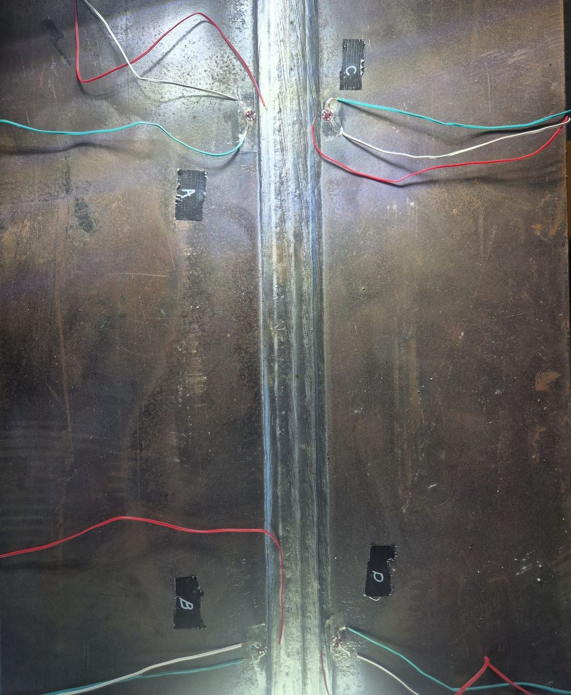
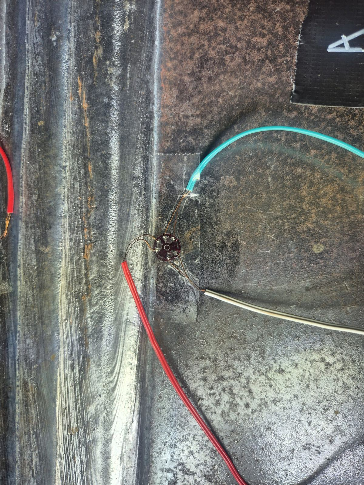
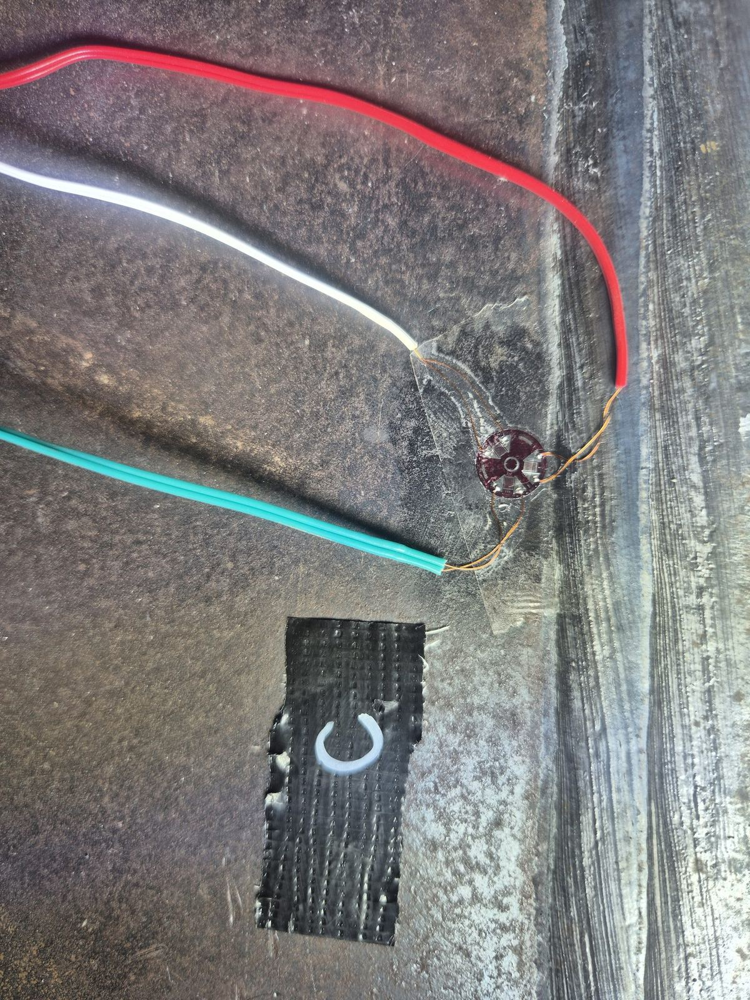
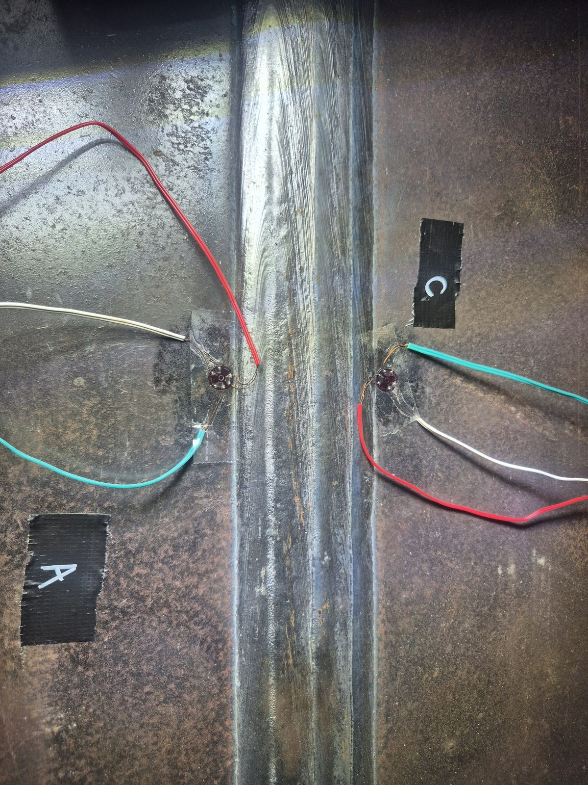
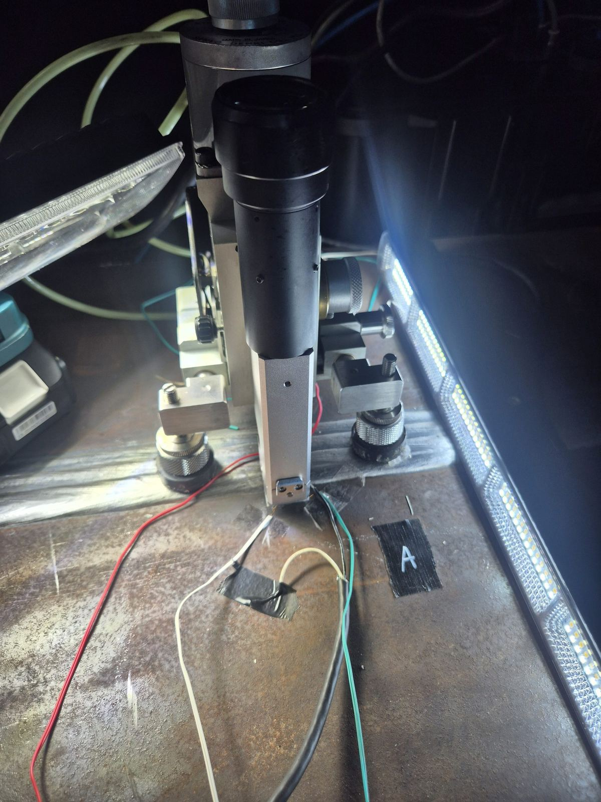
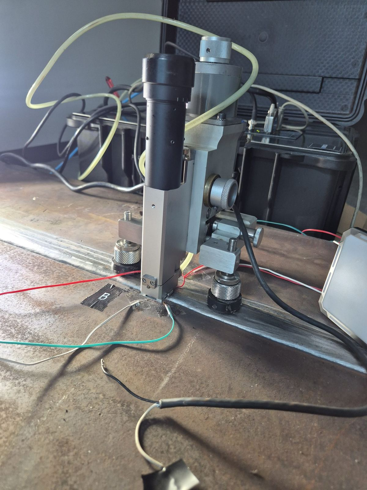

← 기술자료 목록
용접부 잔류응력 측정
잔류응력 측정 · 용접부 Toe 부위
용접부 잔류응력 측정
Toe 부위 잔류응력 해석 케이스
두께 100mm급 후판 용접 시편의 비드 인접 Toe 위치 4개소에 스트레인게이지 로제트를 부착하고, ASTM E837 홀드릴링으로 잔류응력을 측정한 현장 계측 사례입니다.
100mm 후판
용접 깊이 조건이 다른
시편 비교
시편 비교
Toe 4개소
비드 양측 인접 위치
A·B·C·D
A·B·C·D
ASTM E837
SINT MTS3000
홀드릴링 측정
홀드릴링 측정
시험 개요
용접 Toe는 비드와 모재가 만나는 경계로, 단면이 급변해 응력이 집중되고 피로 균열이 시작되기 쉬운 부위입니다. 씨앤디테크는 두꺼운 후판 용접 시편에서 비드에 최대한 인접한 Toe 위치를 양측에서 선정하고, 각 위치에 스트레인게이지 로제트를 부착해 ASTM E837 홀드릴링으로 잔류응력을 측정했습니다.

비드 양측 Toe 4개소 로제트 부착 (A·B·C·D)

비드 인접 Toe 로제트 부착부
계측 절차
위치마다 로제트를 부착하고 표시한 뒤, 현장에서 홀드릴링 장비를 설치해 단계별로 변형률을 기록했습니다.
01
시편·측정 위치 확인
시편 정보와 비드 인접 Toe 측정 위치를 사전 협의
02
측정 표면 준비
측정 부위 표면을 정리해 게이지 접착면 확보
03
로제트 부착·위치 표시
비드 양측 Toe에 로제트 부착, A~D 위치 표시
04
결선·영점 설정
리드선 결선 후 안정화, 변형률 영점 설정
05
홀드릴링 가공
SINT MTS3000으로 단계별 드릴링, 변형률 기록
06
ASTM E837 해석
변형률 변화로 잔류응력 크기·방향 산출

C 위치 Toe 로제트

비드 양측 로제트 결선

Toe 위치 홀드릴링 장비 설치

홀드릴링 측정 진행 (B 위치)
지원 역량 및 서비스 범위
씨앤디테크는 SINT MTS3000 홀드릴링 장비로 후판·용접부 시편의 잔류응력을 현장에서 직접 측정하고, 위치 선정부터 로제트 부착, 데이터 해석까지 한 번에 지원합니다.
관련 기술 자료 더 보기:
자주 묻는 질문 (FAQ)
용접부 Toe 잔류응력 측정 관련 질문
Toe는 용접 비드와 모재가 만나는 경계 부위로, 단면이 급변해 응력이 집중되고 피로 균열이 시작되기 쉬운 곳입니다. 이 위치의 잔류응력이 인장인지 압축인지에 따라 피로 수명이 달라질 수 있어, 비드에 최대한 인접한 Toe에서 실측하는 것이 의미가 있습니다.
측정 위치에 스트레인게이지 로제트를 부착한 뒤 중앙에 작은 구멍을 단계적으로 가공하면, 구멍 주변에서 응력이 해방되며 변형률이 변합니다. 이 변형률 변화를 ASTM E837 해석 절차로 계산해 잔류응력의 크기와 방향을 구합니다. 시편에 미치는 손상이 작아 현장 측정에 많이 쓰입니다.
가능합니다. 이번 사례는 두께 100mm급 후판 용접 시편이었으며, 용접 깊이 조건이 다른 시편을 비교하는 용도였습니다. 시편 표면에 계측 장비를 안정적으로 고정할 수 있으면 두께와 상관없이 표면 잔류응력을 측정할 수 있습니다.
용접 비드 양쪽 Toe에 각각 로제트를 부착하고 A, B, C, D로 위치를 표시해 데이터가 섞이지 않도록 관리했습니다. 위치 표시는 현장 측정에서 사후 분석의 정확도를 좌우하는 기본 절차입니다.
가능합니다. 씨앤디테크는 SINT MTS3000 홀드릴링 장비를 현장에 가져가 시편 보관 장소나 제작 현장에서 직접 측정합니다. 시편 크기, 소재, 측정 위치를 알려주시면 일정과 방법을 안내해 드립니다.
용접부 잔류응력 측정 문의
시편 소재, 두께, 측정 위치를 알려주시면 측정 방법과 일정을 안내해 드립니다. 현장 출장 측정도 지원합니다.